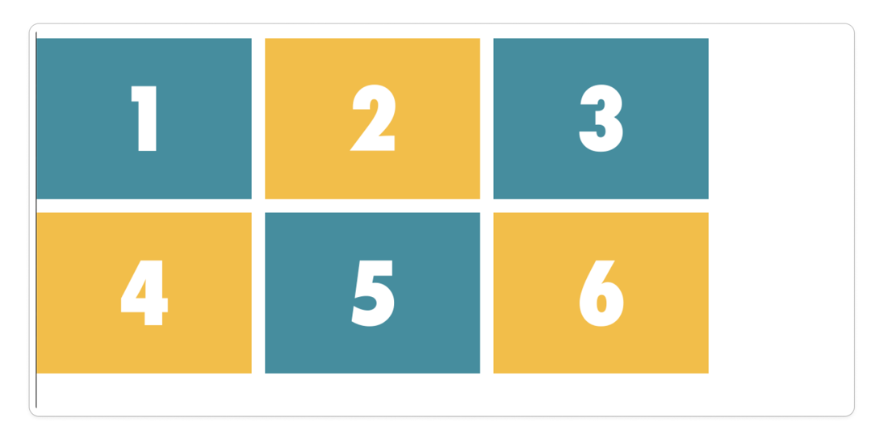
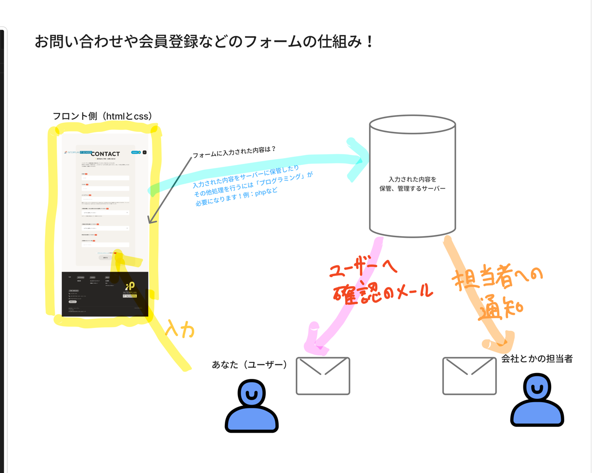
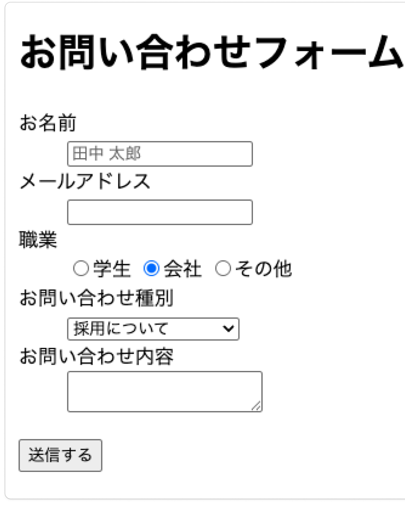

訓練校 IT スクール｜全6時間の集中授業
| 時間 | セクション |
|---|---|
| 1時間目 | テーブル（表組）を作る |
| 2時間目 | セルの結合（colspan / rowspan） |
| 2〜3時間目 | グリッドレイアウト（CSS Grid） |
| 3時間目 | fr単位でレスポンシブ |
| 4時間目 | フォームの仕組み（フロントとサーバー） |
| 4時間目 | フォームのタグ（input / label / select / textarea） |
| 5時間目 | フォームのデザイン（CSS） |
table > tr > th / td。trの中のセル数は全行そろえるborder-collapse: collapse; ＋ border-spacing: 0;colspan（横）/ rowspan（縦）。結合した分セルを減らすdisplay: grid。flexと違い縦横2次元で配置できるgrid-template-columns（列）/ grid-template-rows（行）で枠を作るgap（flexでも使える）。fr 単位は割合指定（1fr 1fr 1fr＝均等）input の type属性で部品が変わる（text/email/radio/checkbox…）label の for と input の id を一致させるとクリックで反応表は4種類のタグを組み合わせて作ります。先に「どんな表か」を紙やFigmaで描いてからタグに置き換えると迷いません。なお、テーブルは昔レイアウト作りに使われましたが、今はflex/gridがあるのであまり使いません。
| タグ | 意味 |
|---|---|
<table> | 表全体をまとめる |
<caption> | 表のタイトル |
<tr> | テーブルロー＝1行。trの数＝行数 |
<th> | テーブルヘッド＝見出しセル |
<td> | テーブルデータ＝通常セル |
th / td は必ず tr の中に入れる（行の中のセルだから）。
<table> <caption>バーベキュー料金比較</caption> <tr><th> </th><th>コスパ</th><th>ボリューム</th></tr> <tr><th>金額</th><td>3,000円</td><td>5,000円</td></tr> </table>
テーブルに border をつけると線が二重になる。これを整えるお決まりの記述：
table { border-collapse: collapse; /* 隣り合う線を1本にまとめる */ border-spacing: 0; /* セル間の余白を0に */ }
各trのセル数は必ずそろえる（1行だけ2個や4個はNG＝表が崩れてCSSも効かなくなる）。これがテーブルが嫌われる理由の1つ。THに幅を指定すると同じ列の下のセルも連動して伸びる。
Excelやスプレッドシートのようにセルをくっつけられます。th / td の属性で指定。
| 属性 | 意味 |
|---|---|
colspan="2" | 横に2セル分結合（→ 同じtrのセルを1つ減らす） |
rowspan="2" | 縦に2セル分結合 |
イメージは「結合」というよりセルを伸ばす感じ。先生いわく、昔の訓練校のサイトはテーブル＋colspan/rowspanだけでレイアウトしていて、1か所間違えると全体が崩れて編集が大変だった——だから今は無理に使わない。
flexの2.0版のようなもの。flexが「横並び（1次元）」が得意なのに対し、グリッドは縦と横の両方（2次元）をマス目で一気に組めます。写真ギャラリーのような格子状の配置が得意。

grid-template-columns で3列、grid-template-rows で2行を作り、6個の箱を格子状に配置。箱の間のすき間は gap.container { display: grid; grid-template-columns: 320px 320px 320px; /* 列（横） */ grid-template-rows: 240px 240px; /* 行（縦） */ gap: 10px; /* マス目同士のすき間（marginは使わない） */ }
grid-template-columns ＝書いた数だけ横に列が増えるgrid-template-rows ＝書いた数だけ下に行が増える先生が紹介。ゲーム感覚でグリッドに慣れられるサイト。flexbox版（Flexbox Froggy）もあります。深く考えず慣れるのがコツ。
ピクセルで列幅を固定すると計算が面倒だし画面幅で崩れる。グリッド専用の単位 fr（fraction＝割合）を使うと「1対1対1」のような比率で幅を決められます。料理の「醤油：みりん：酒」の割合のイメージ。
.container { width: 100%; max-width: 1000px; grid-template-columns: 1fr 1fr 1fr; /* 3等分 */ } /* スマホ：999px以下は2列に */ @media screen and (max-width: 999px) { .container { grid-template-columns: 1fr 1fr; } }
最大1000px・gap込みなら 1fr＝約320px に自動計算してくれる。列幅をピクセルで書かなくて済むのが楽。
お問い合わせ・会員登録などの入力フォーム。見た目（フロント）はHTML/CSSで作れるけど、入力された内容をサーバーに保存したりメール通知する部分はプログラミング（PHPなど）が必要。今回は見た目だけを作ります。

フォームは住所・電話・決済情報など大事な情報を扱うので、サーバー側はガチガチのセキュリティが必要（だからこれを0から作れる人は給料が高い）。サイトは http ではなく https（SSL対応）にする。やり方はレンタルサーバーの管理画面でSSLをオンにするだけ。
用語：私たちがやるHTML/CSS側＝クライアントサイド（フロント）、処理する側＝サーバーサイド。

フォームを画面幅いっぱい（90%など）で作ると、入力欄がビヨーンと伸びて首や目が左右に動いてストレスになる。だから max-width: 800px くらいに収める。世の中のフォームも大体1000px以下。
.form-item でまとめ、flexで横並び（ラベル｜入力欄）margin: 0 auto で中央寄せ、白背景＋padding で枠にwidth: 100% ＋ font-size: 16px（入力文字を大きめに＝使いやすさ）display: block で縦並びに組み替え/* type="text" の input だけを狙う */ input[type="text"], input[type="email"] { display: block; width: 100%; font-size: 16px; }
属性と値を [ ] でセレクターにできる。クラスを振っても同じことができる（先生は実務ではクラス派）。
凝ったフォームは標準デザインを display:none で全消しして作り直すことがあるが、キーボード操作のフォーカスができなくなる。キーボードでフォームを使う人（元エンジニア等）もいるので、元のスタイルを活かして装飾する方が良い。いじりすぎない。
必須マークは dt::before { content: "◆"; } で表示。ボタンは :hover で色を変えるアニメも。
| 用語 | 意味 |
|---|---|
| table / tr / th / td | 表全体 / 行 / 見出しセル / 通常セル |
| caption | 表のタイトル |
| border-collapse: collapse | 隣り合う線を1本にまとめる |
| border-spacing: 0 | セル間の余白をなくす |
| colspan / rowspan | セルを横 / 縦に結合（伸ばす） |
| display: grid | グリッドレイアウト（縦横2次元） |
| grid-template-columns / rows | 列 / 行の数と大きさ |
| gap | マス目同士のすき間（flexでも使える） |
| fr | fraction＝割合の単位（1fr 1fr＝1対1） |
| form | フォームの土台タグ |
| action / method | 送り先 / 送り方（post＝隠す, get＝丸見え） |
| input + type | 入力部品。typeで種類が変わる。閉じタグなし |
| label + for ⇔ input + id | 一致させるとラベルクリックで入力欄が反応 |
| name | プログラム用のグループ名（ラジオは同じに） |
| value | サーバーに送られる値 |
| checked / selected | ラジオ / プルダウンの初期選択 |
| select + option | プルダウンメニュー |
| textarea | 複数行の入力欄（閉じタグあり） |
| submit / button | 送信ボタン / 汎用ボタン |
| placeholder | うっすら灰色の見本文字（最近は非推奨ぎみ） |
| 属性セレクター | input[type="text"] のように属性で狙う |
| SSL / https | 通信を暗号化した安全な接続 |
| クライアント / サーバーサイド | フロント（HTML/CSS） / 処理側（プログラミング） |
table > tr > th/td、各trのセル数をそろえるborder-collapse: collapse ＋ border-spacing: 0 で隙間消しcolspan（横）/ rowspan（縦）でセル結合display: grid ＋ grid-template-columns/rows で格子配置gap、割合指定は fr 単位method="post"（getは中身が丸見え）input の type で部品を切り替え（閉じタグなし）label for ⇔ input id を一致＝クリックで反応textarea、プルダウンは select + option「グリッドは最悪覚えられなくてもいいです。その代わりディスプレイフレックスを必ず使いこなせるように。」
→ flexができればgridでやることの大半はカバーできる。優先順位の話。
「この仕組みを0から作れる人は、めっちゃ給料高くなります。」
→ フォームのサーバー処理は決済・個人情報を扱う＝責任重大だから。
「お問い合わせの文章、最初に一言あいさつ入れてあげるといいですよ。カスタマーサポートの人も人間ですからね。」
→ textareaの説明から脱線した、地味に役立つ社会人マナー。